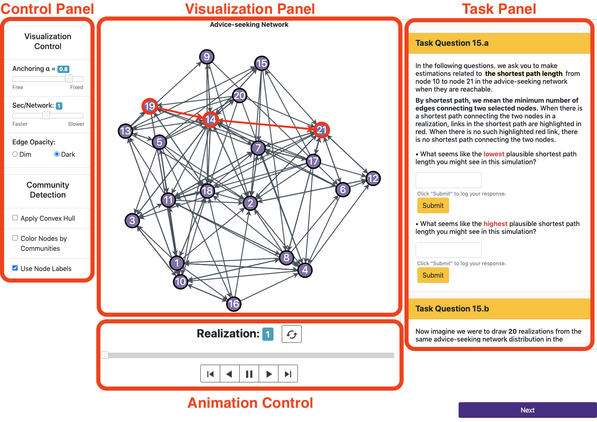

Goals of the remainder of the study — Part 2
In each of the following 11 task screens, you will see the same tasks that you already completed, and you will also see your responses from before. Your task is to remind yourself of each question you previously answered, then see if you can improve how well the visualization supports answering this set of questions by tuning the visualization parameters using the Control Panel on the left-hand side of the screen.
If you find a set of visualization parameters that can more effectively allow you to answer the task questions, please update your answers. Otherwise, simply re-submit your responses and proceed to the next page. The visualization parameters can be identical to the settings provided by default, or they may be different based on your preference.
In the Visualization Control, you are be able to tune:
- Anchoring α: slide to control the amount of node movement.
- A higher α value can make the network layout more stable, meaning fewer node movements across simulations. However, it will compromise visibility, potentially creating more visual clutter such as link crossings and overlapping nodes.
- A lower α value value compromises stability but will make the layout more aesthetic with less visual clutter.
- Sec/Network: slide to control how fast the animation should play. The number indicates how many seconds should the Visualization Panel show each network realization.
- Link Opacity: click to control the opacity of all link occurrences.
In the Community Detection Control, you can add three different types of visual aids that are:
- Apply Convex Hull: click the checkbox to show the convex hulls around communities.
- Color Nodes by Communities: click the checkbox to indicate nodes in different communities by different colors.
- Use Node Labels: click to render node labels for identification.
Friendly tips:
- Please adjust the browser window size to see as much content as possible.
- Please refresh the page if you see a glitch or when necessary.